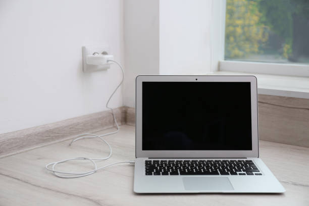
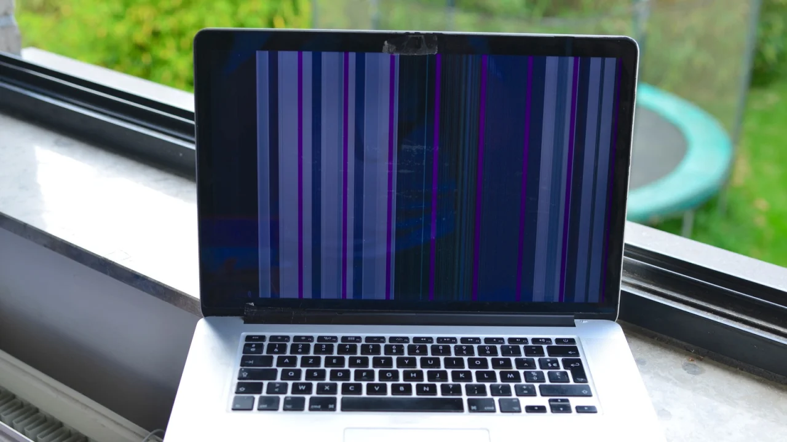

Power Issues
- Ensure the power cable is securely connected to both the laptop and outlet.
- Try a different outlet or charger if available.
- Hold the power button for 10 seconds to force a startup.
- Check for indicator lights or fan noise.

Screen Is Flickering

- Lower your screen brightness temporarily.
- Update your graphics drivers via Windows Update or the manufacturer’s site.
- Disable hardware acceleration in apps like Chrome or Edge.
- Restart the laptop and check if the issue persists.
- If using an external monitor, check its cable and refresh rate settings.
Problem: No Sound
- Check if the volume is muted or turned down.
- Ensure headphones or speakers are properly plugged in.
- Right-click the sound icon and run the Windows troubleshooter.
- Update your audio drivers.
- Restart the laptop and test with a different app.
Problem: Keyboard Not Responding
- Try pressing multiple keys to see if any respond.
- Restart the laptop — sometimes drivers fail to load.
- Check for crumbs or debris under the keys.
- Plug in an external keyboard to test if it’s a hardware issue.
- Update or reinstall keyboard drivers in Device Manager.